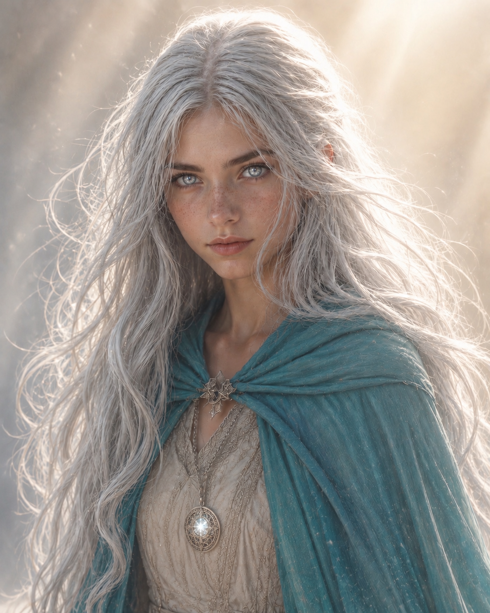
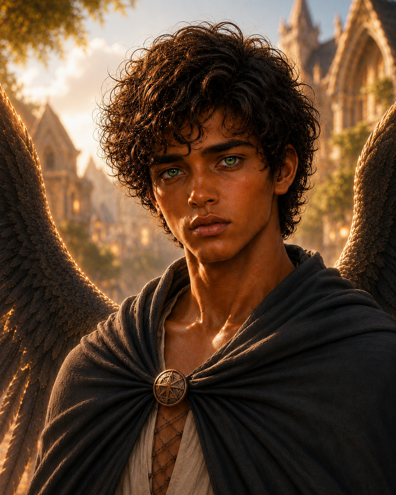
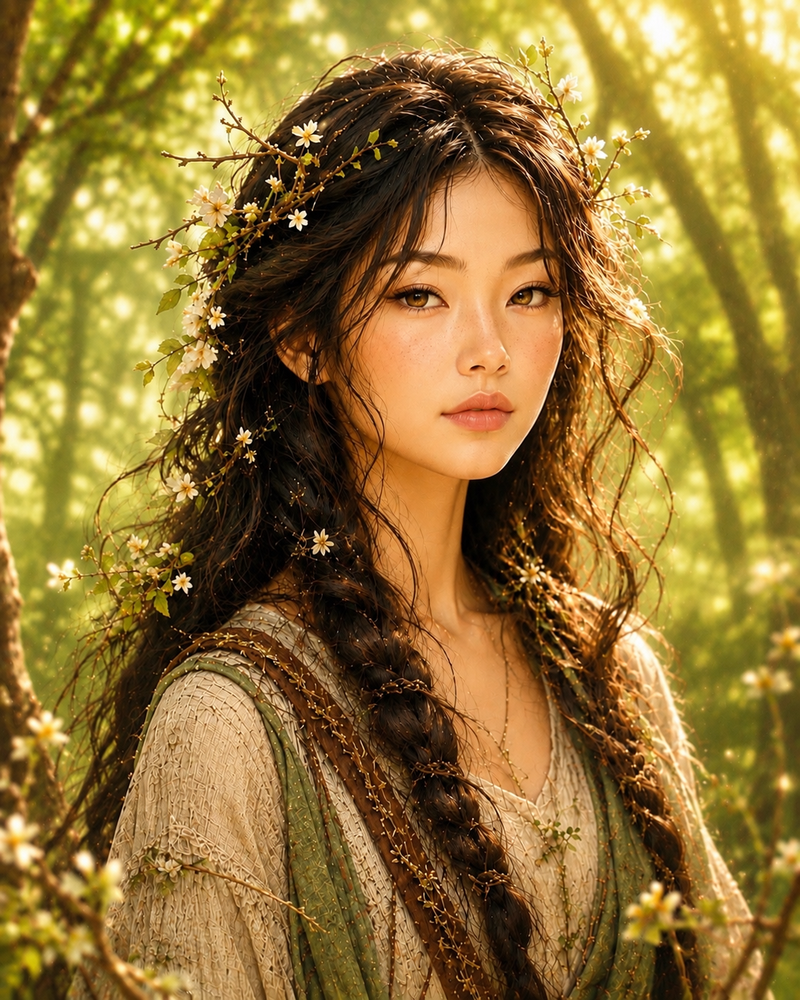
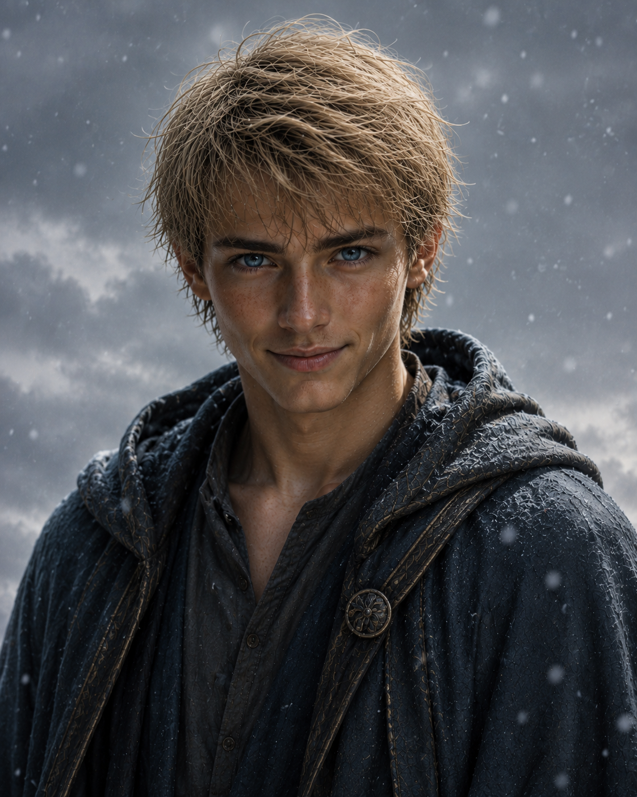
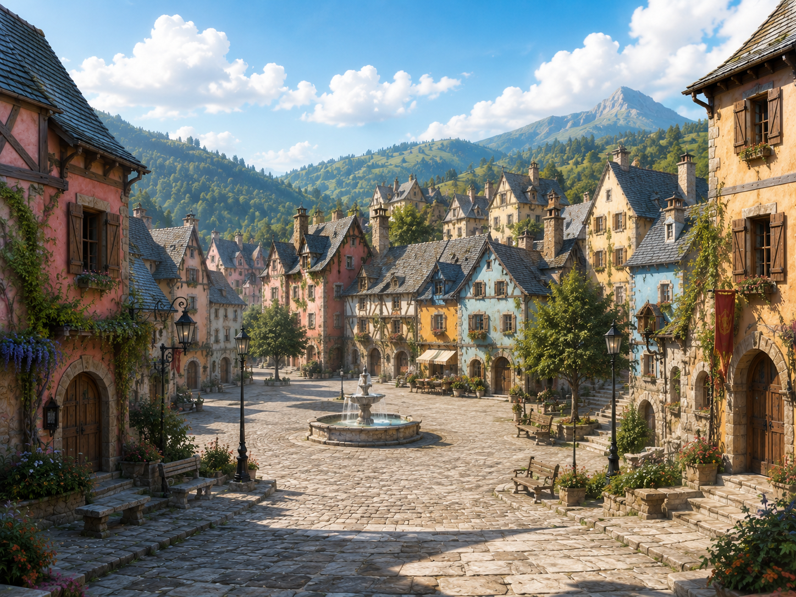
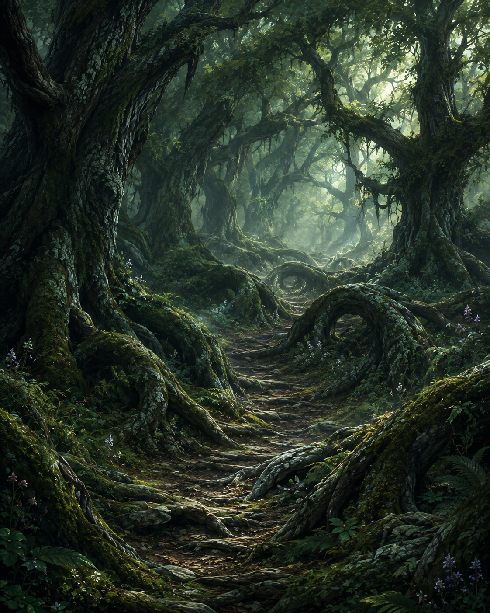
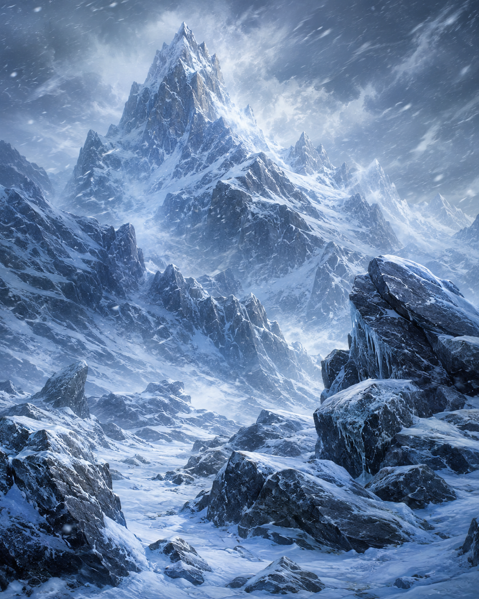
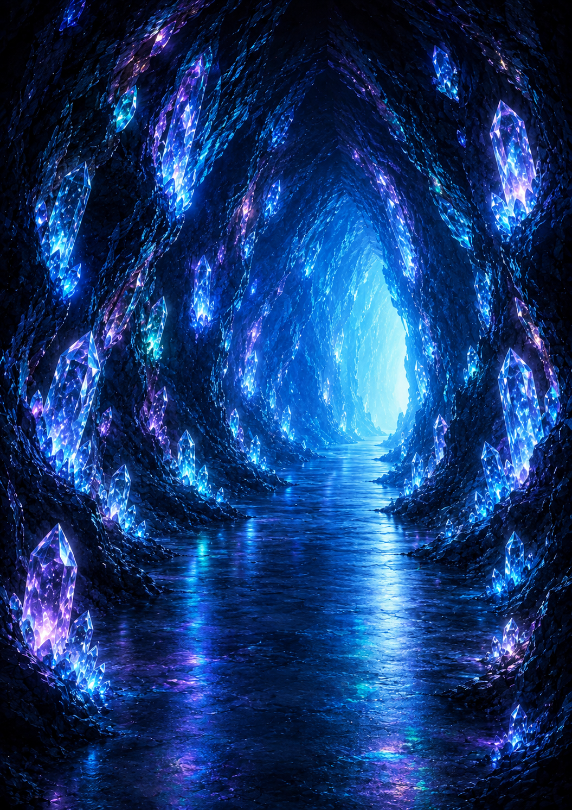

Nel regno magico di Aetherion, un antico cristallo custodisce verità che pochi hanno il coraggio di affrontare. Quattro ragazzi partiranno alla sua ricerca, ognuno di loro portando con sé un dono straordinario; ma anche dubbi, fragilità e insicurezze che spesso sembraranno più forti di qualsiasi potere. Attraversando terre misteriose, paure nascoste e scelte in grado di cambiare ogni cosa, impareranno lungo il cammino a fidarsi gli uni degli altri, a guardarsi con occhi nuovi e a capire che ciò che li rende imperfetti può diventare la loro forza più grande. Tra magia, amicizia e crescita, per trovare il cristallo la sfida più difficile sarà avere la capacità di guardarsi dentro.

Le sue visioni arrivano senza preavviso e spesso la travolgono. Fatica a capirne il significato.

Le sue ali lo imbarazzano. Non si sente all'altezza dei suoi antenati perché non sa volare.

Ha donato la sua voce alla foresta per salvarla. Quando prova a comunicare con le persone, la voce le si spezza in gola.

Spavaldo in apparenza, spaventato in realtà: il vento sfugge spesso al suo controllo.
Aetherion è un regno sospeso tra magia e mistero che si estende ai confini del mondo. Foreste dalle foglie iridescenti, fiumi limpidi come specchi, montagne innevate, pianure infinite e deserti dorati compongono un paesaggio in continuo mutamento. In un angolo remoto di Aetherion sorge Elvoria, un villaggio i cui abitanti sono dotati di doni speciali.




Il libro affronta, attraverso un'avventura fantasy, temi che rientrano nell'educazione socio-emotiva (SEL):
Il libro è accompagnato da un percorso interattivo gratuito, raggiungibile scansionando un QR code stampato alla fine del libro. Il lettore non osserva più i personaggi dall'esterno: affronta in prima persona le stesse prove del romanzo, attraverso scelte che non hanno mai una risposta «giusta» o «sbagliata» — solo una riflessione, pensata per far emergere quanto il messaggio di quella tappa sia stato compreso e fatto proprio.
Con 25 scenari diversi (5 per ogni ambientazione) distribuiti lungo un percorso fisso, ogni lettura del libro può essere seguita da un'esperienza leggermente diversa: un dettaglio pensato apposta per non esaurirsi al primo utilizzo.
Aspetti pratici pensati per un uso con i ragazzi:
Il romanzo e il percorso interattivo si adattano a lettori di scuola primaria e secondaria di primo grado (8-14), e possono essere proposti sia come lettura individuale sia come progetto di classe.
Per maggiori informazioni e presentazioni, contattare l'autrice: monica.lazzari@gmail.com
Prezzo: €16,00
ISBN: 979-12-5761-091-3 — Formato: [da inserire]
Acquista su Amazon [link] Acquista su Mondadori [link] Acquista su Feltrinelli [link] Acquista su Giacovelli Editore [link]